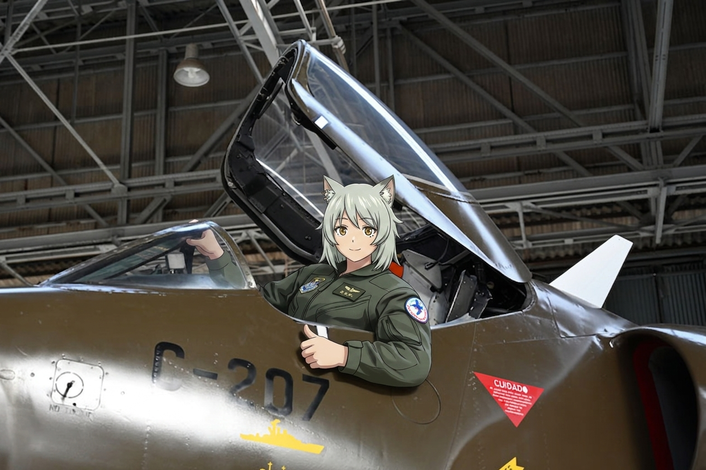

Comodoro (Y) Yani Neko
JEFE DEL CUERPO DE ENSAYOS EN VUELOEspecialidad: Evaluación Operacional & Envolvente de Vuelo Supercrítica.
Historia: Alto nivel de experiencia en evaluación de sistemas de vuelo y operaciones en entornos críticos.